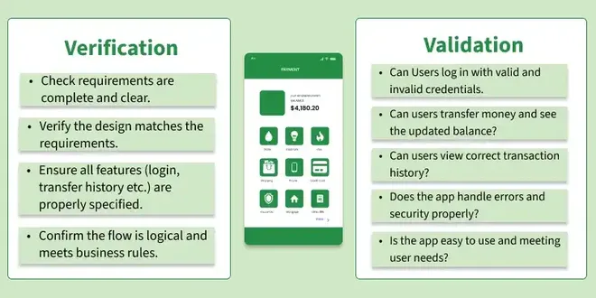
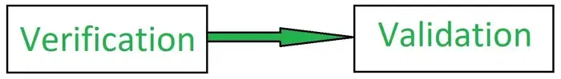
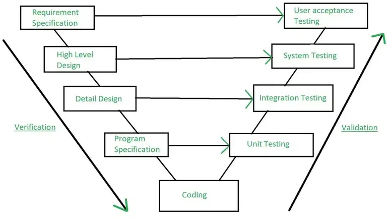

8.3 Verification & Validation (V&V)
Verification and Validation (V&V) are the processes of investigating whether a software system satisfies specifications and standards and fulfils its required purpose. Both play a central role in developing high-quality software — verification examines whether the product is built right according to requirements, while validation examines whether the right product is built to meet user needs. V&V activities are distributed across the entire SDLC, not confined to a single testing phase at the end.
The QA overview in §8.1 links verification to QA and validation to QC; SQA in §8.2 oversees both as part of the overall quality system.


What is Verification?
- Verification is the process of checking that software achieves its goal without defects and that the product being developed is correct according to its specifications.
- It answers the question: "Are we building the product right?"
- Verification confirms that the developed product fulfils the documented requirements and conforms to design standards — it is concerned with conformance, not user satisfaction alone.
- Verification is also called static testing because it does not require executing the program; work products are examined directly.
- Static testing checks whether development is proceeding correctly and whether the software being produced matches what was planned in the SRS and design documents.
Static testing — verification activities
- Inspections: A careful, structured examination of the software's design or code to spot potential problems, inconsistencies, or areas for improvement before they propagate to later phases.
- Reviews: A team effort where stakeholders assess requirements, design, or code together to confirm that everything is on track and meets specified objectives.
- Walkthroughs: The developer or designer gives an informal presentation of their work, explaining how it meets project requirements — a quick way to align the team and catch misunderstandings early.
- Desk-checking: A developer manually reviews their own code or design line by line to catch mistakes before submitting the work product for formal review or compilation.
- Static analysis: Automated tools scan source code for syntax errors, style violations, security patterns, and potential defects without running the program.
What is Validation?
- Validation is the process of checking whether the software product is up to the mark — whether it meets high-level requirements and actually solves the user's problem.
- It answers the question: "Are we building the right product?"
- Validation compares the actual product against expected behaviour in real or simulated use conditions, not just against internal documents.
- Validation is also called dynamic testing because it requires executing the software and observing its behaviour.
- Dynamic testing examines whether the product performs correctly in practice and whether it satisfies the client's business needs, not merely whether it matches a written specification.
Dynamic testing — validation activities
- Black box testing: The software is tested from the user's perspective without knowledge of internal code — inputs are applied and outputs are checked against expected behaviour (e.g. clicking buttons, submitting forms).
- White box testing: Testing examines the internal logic, control flow, and structure of the code to confirm that paths, conditions, and data handling work correctly behind the scenes.
- Unit testing: Individual functions or modules are tested in isolation to confirm each piece works correctly on its own before being combined with other components.
- Integration testing: After unit testing, combined modules are tested together to confirm interfaces, data flow, and interactions work as intended.
- System testing: The complete integrated system is tested against the overall requirements to confirm end-to-end functionality.
- User acceptance testing (UAT): The client or end users test the finished product to confirm it meets their needs and expectations before accepting delivery.
- Non-functional testing: Performance, load, security, and usability tests validate that the product behaves acceptably under real-world conditions beyond functional correctness.
- Full coverage of testing levels, techniques, and specialised types is in Topic 7 — Software Testing & Debugging.
Example scenario — e-commerce application
The following example shows how verification and validation apply to the same project at different stages:
- Verification (during development): The team reviews the system design and code for key features — user registration, shopping cart, and payment processing. Through inspections and walkthroughs, they confirm each part is being built according to the initial plan and SRS specifications before coding proceeds further.
- Validation (after implementation): Once development is complete, the team runs unit tests to confirm individual features work — for example, that the shopping cart calculates prices correctly. Integration tests confirm all features work together. System testing checks the whole application. Finally, the client performs acceptance testing to confirm the software meets their business needs.
- Verification catches design and specification errors early; validation confirms the running product actually delivers value to the user.
Verification vs Validation — comparison
| Aspect | Verification | Validation |
|---|---|---|
| Definition | The set of activities that ensure software correctly implements the specified function | The set of activities that ensure the built software is traceable to customer requirements and user needs |
| Question | Are we building the product right? | Are we building the right product? |
| Focus | Checking documents, designs, code, and programs for conformance | Testing and validating the actual running product |
| Type of testing | Static testing — no code execution required | Dynamic testing — code must be executed |
| Execution | Does not include running the program | Includes running the program and observing results |
| Methods used | Reviews, walkthroughs, inspections, desk-checking, static analysis | Black box testing, white box testing, unit/integration/system testing, non-functional testing, UAT |
| Timing | During each development phase — early defect detection | After implementation; concentrated at integration, system, and acceptance stages |
| QA/QC link | QA activity — process and specification conformance | QC activity — product quality against user needs |
| Who performs | Developers, reviewers, SQA group | Test engineers, end users, customers, independent validators |
- Verification is followed by validation — at each stage, the team first confirms the work product meets its specification (verification), then confirms the overall system meets user needs (validation).
- Both are required; strong verification reduces the number of defects reaching validation, but verification alone cannot confirm the product solves the user's real problem.
Why Verification and Validation are important
- Verifying correctness: Verification catches mistakes early in development and ensures the software is being built the right way according to the original plan and specifications — before expensive coding and testing cycles are wasted.
- Meeting user needs: Validation confirms the final product actually solves the user's problem and performs as expected in real-world conditions, not just on paper.
- Preventing bugs and issues: Verification finds defects before the software is even executed, allowing fixes at low cost; validation ensures the running product works reliably, preventing surprises after release.
- Improving efficiency: Using both V&V together helps teams catch issues sooner, reduce rework, shorten the bug-fix cycle, and release products faster with higher confidence.
- Together, V&V provide the evidence that SQA needs to report quality status to management — see §8.2 SQA.
V&V roles in the SDLC
V&V activities support several critical analysis functions throughout the lifecycle:
- Traceability analysis: Ensures that every requirement is linked to design elements, code modules, and test cases — and that no extraneous features exist.
- Interface analysis: Verifies that interfaces between modules, subsystems, and external systems are correctly specified and implemented.
- Criticality analysis: Assigns criticality levels to software components based on the consequences of failure, so that V&V effort is proportional to risk.
- Hazard and risk analysis: Identifies potential hazards, assesses their severity and likelihood, and ensures that mitigation measures are verified and validated.
Criticality analysis — five steps
Criticality analysis prioritises V&V activities by ranking components according to the impact of their failure:
CRITICALITY_ANALYSIS(system)
STEP 1 — IDENTIFY COMPONENTS
LIST all software components, modules, and subsystems
MAP each component to its functional requirements
STEP 2 — ASSIGN CRITICALITY LEVELS
FOR each component C DO
DETERMINE failure consequences (safety, financial, operational)
ASSIGN level: CRITICAL | HIGH | MEDIUM | LOW
END FOR
STEP 3 — IDENTIFY FAILURE MODES
FOR each component C DO
LIST possible failure modes (crash, wrong output, data loss, ...)
ESTIMATE probability of each failure mode
END FOR
STEP 4 — ASSESS IMPACT
FOR each (component, failure_mode) pair DO
COMPUTE impact score = severity × probability
RECORD in criticality matrix
END FOR
STEP 5 — PRIORITISE V&V ACTIVITIES
SORT components by impact score (highest first)
ALLOCATE verification effort (reviews, static analysis) by level
ALLOCATE validation effort (testing depth, coverage) by level
DOCUMENT V&V plan with traceability to criticality rankings
END CRITICALITY_ANALYSISV&V and the V-Model
The V-Model maps each development phase on the left (verification side) to a corresponding testing phase on the right (validation side). Verification activities descend from requirements to coding; validation activities ascend from unit testing to user acceptance testing. Horizontal arrows link each development artefact to the test level that validates it.

- Requirement specification is validated by user acceptance testing — confirming the delivered system meets original user needs.
- High-level design is validated by system testing — confirming the integrated architecture works as a whole.
- Detail design is validated by integration testing — confirming modules interact correctly through their interfaces.
- Program specification is validated by unit testing — confirming each individual program module behaves according to its detailed spec.
- Coding sits at the base of the V — the point where design becomes executable code and both verification (code review) and validation (unit tests) begin in earnest.
- The V-Model ensures V&V is planned from the start rather than bolted on at the end — each test level has a direct traceability link back to a development artefact.
See the full V-Model process description in §2.13 V-Model.
Q: Define verification and validation. Differentiate between them with a comparison table. List static and dynamic testing activities. Explain why V&V are important and describe the role of criticality analysis.
Model answer points:
- V&V = investigating whether software satisfies specs/standards and fulfils its required purpose.
- Verification = "building product right" — static testing, no execution; methods: inspections, reviews, walkthroughs, desk-checking, static analysis.
- Validation = "building right product" — dynamic testing, requires execution; methods: black/white box, unit/integration/system/UAT, non-functional testing.
- Verification followed by validation at each stage.
- Comparison: definition, focus (docs vs product), type (static vs dynamic), execution, methods, QA vs QC link.
- Importance: early correctness, meeting user needs, preventing bugs, improving efficiency.
- Example: verification = design/code reviews during development; validation = unit → integration → system → acceptance testing after build.
- V&V roles: traceability, interface analysis, criticality analysis, hazard/risk analysis.
- Criticality analysis: identify components → assign levels → identify failure modes → assess impact → prioritise V&V.
- V-Model: requirements↔UAT, HLD↔system test, detail design↔integration test, program spec↔unit test.